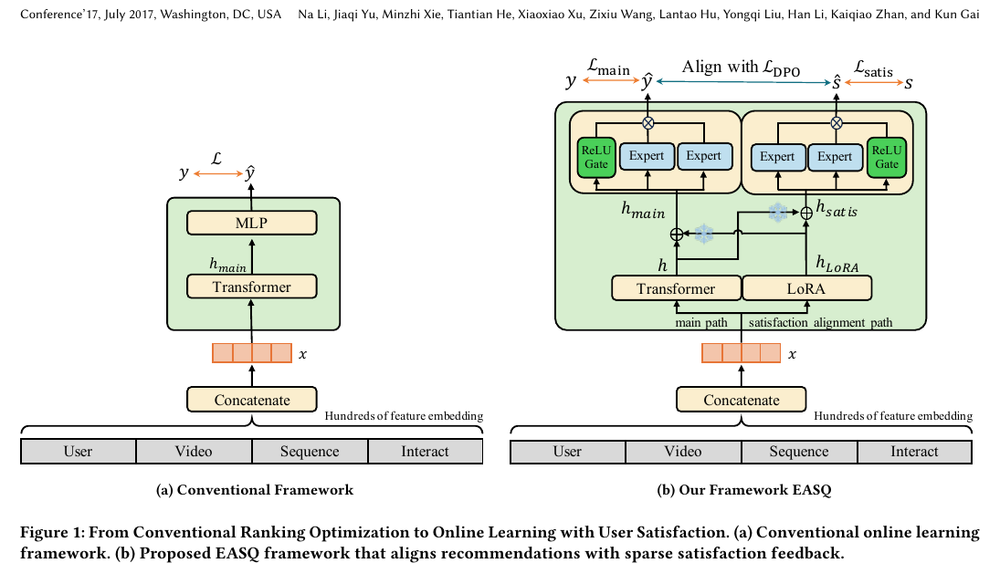
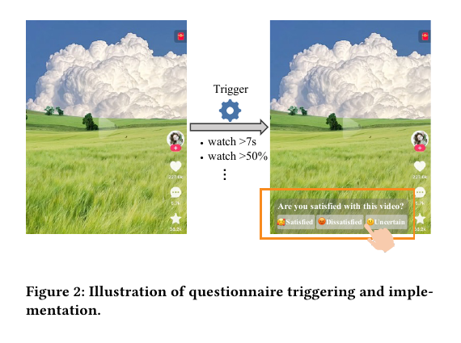
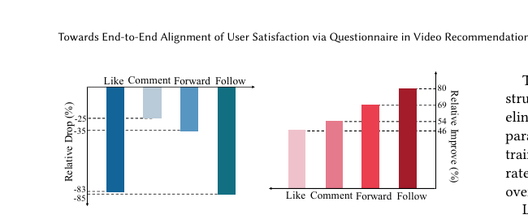
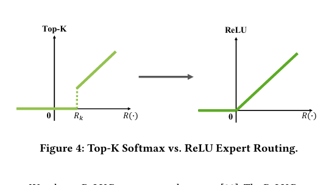
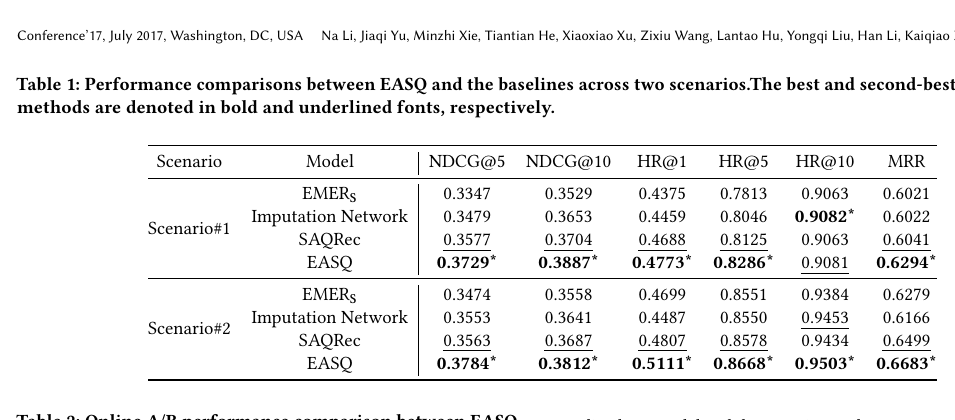
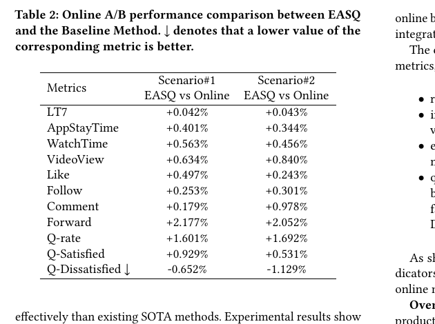
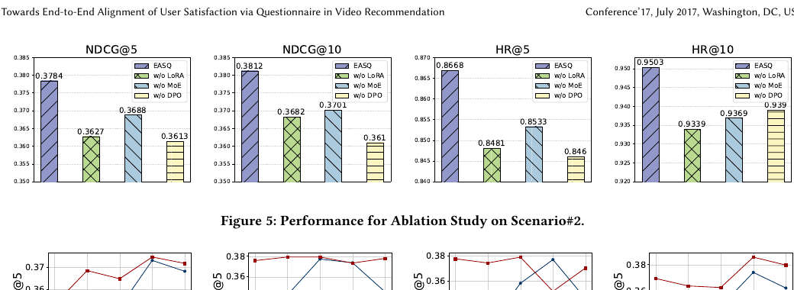
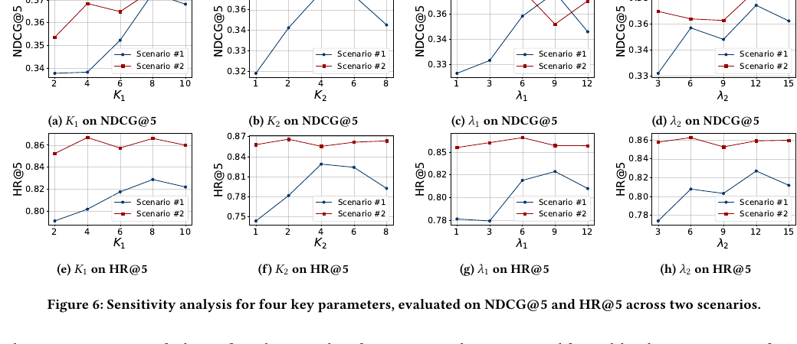

EASQ
1. 基本信息
- 标题：Towards End-to-End Alignment of User Satisfaction via Questionnaire in Video Recommendation
- 模型名：EASQ，
End-to-End Alignment of user Satisfaction via Questionnaire - 作者：Na Li, Jiaqi Yu, Minzhi Xie, Tiantian He, Xiaoxiao Xu, Zixiu Wang, Lantao Hu, Yongqi Liu, Han Li, Kaiqiao Zhan, Kun Gai
- 机构：Kuaishou Technology
- 时间：2026
- arXiv：https://arxiv.org/abs/2601.20215
- DOI：https://doi.org/10.48550/arXiv.2601.20215
- 关键词：User Satisfaction、Questionnaire Feedback、Online Learning、Sparse Supervision、LoRA、DPO、Video Recommendation
- pdf位置：
C:\Users\chaol\Desktop\推荐论文阅读\reward sys\emer2.pdf - 笔记位置：
论文笔记/精排/LTR与多目标融合/EASQ.md - 分类：精排 / LTR与多目标融合
2. 相关论文
- EMER：这篇论文把 EMER 明确当作前置工作之一。EMER 仍然是从行为反馈里构造“相对满意度”去逼近真实满意；EASQ 的核心判断是，这样的监督仍然是 proxy，不如直接把问卷满意度接进在线学习。两篇都在做“最终排序与用户满意对齐”，但 EMER 更偏 comparative learning on behaviors，EASQ 更偏 sparse direct supervision + stable alignment pathway。
3. 一句话总结
EASQ 的核心不是“再加一个满意度头”，而是把极稀疏但更直接的问卷满意度，沿着一条相对独立的参数通路接入在线学习：下层用 LoRA 预注入满意度语义，上层用双路 MoE 分开建模主任务和满意度任务，再把满意度专家当作在线 reference model，用 DPO 持续把主排序结果往真实满意度方向拉。
4. 论文在解决什么问题
4.1 为什么现有排序目标和“真实满意”仍然隔着一层
短视频排序模型通常靠点击、观看时长、点赞、关注这类密集行为训练，但论文的判断是：这些信号虽然好收集，却只是满意度的间接投影。
问题不只在“噪声大”，而在于它们的语义本身就不是“你到底满意不满意这个视频”。同一个长看，可能是喜欢，也可能只是被内容拖住；同一个点赞，也不一定覆盖完整观看体验。论文因此把目标改成：如何在不牺牲在线训练稳定性的前提下，用极稀疏但更直接的问卷反馈去对齐排序模型。
4.2 Figure 1：EASQ 不是替掉主模型，而是在主模型旁边补一条满意度对齐通路

Figure 1 很重要，因为它把 EASQ 的整体设计一次性讲清楚了。
- 左边是常规在线学习框架：特征拼接后进 backbone，最后只由主任务 loss 驱动。
- 右边是 EASQ：在同一份输入上，除了主路径，还额外开出一条 satisfaction alignment path。
- 这条新路径不是从顶层硬插一个辅助头，而是从下层就开始进入。LoRA 先在 backbone 低层注入稀疏满意度语义；再往上，主任务和满意度任务分别走独立 expert 路由；最后主任务输出 ，满意度路径输出 ，并通过 把主模型往满意度方向对齐。
我觉得这张图最值钱的地方是它回答了论文最核心的工程问题：既然问卷信号极少，为什么它不会在大规模在线更新里被密集行为梯度淹没？作者的答案不是“把这部分 loss 权重调大”，而是直接给它造一条相对独立的参数通路。
4.3 Figure 2：问卷不是随时弹，而是在“看过一段内容后”再询问即时体验

问卷设计部分虽然不复杂，但对整篇 paper 很关键，因为它决定了监督信号到底在测什么。
论文采用的不是“你对这个账号感不感兴趣”或“这类内容符合不符合你的价值观”，而是更直接的问题：Are you satisfied with this video?
- 选项只有三个：
Satisfied / Dissatisfied / Uncertain - 触发条件是：用户至少看了
7秒，或者观看进度达到50% - 问卷嵌在播放界面底部，单击即可反馈，不跳转
这里的关键不是交互形式本身，而是它把监督语义尽量收窄到了“当前这个视频带来的即时体验质量”。这和兴趣问卷、价值问卷不一样，后两者更偏长期偏好结构，EASQ 要对齐的是当前排序结果是否真的让人满意。
4.4 Figure 3：问卷反馈和后验行为确实相关，但作者仍然坚持“不能只靠行为代理”

Figure 3 做的是 convergent validity 验证，也就是先证明这套问卷不是随便填出来的噪声。
- 选
Dissatisfied的样本，其后验行为会明显低于用户平均水平。图里Like和Follow大约掉到-83%、-85%，Comment和Forward也明显下降。 - 选
Satisfied的样本，其后验行为显著高于平均水平。Like / Comment / Forward / Follow大约提升到46% / 54% / 69% / 80%。
这张图支持了两层结论：
- 问卷满意度不是胡乱噪声，它和真实后验行为方向一致。
- 但作者并没有因此退回“那继续用行为做代理就好了”。相反，他们的论点是：既然行为和问卷相关，但仍不等价，那么最好的做法是把问卷作为更直接的监督，把行为作为主任务信号，而不是继续把行为硬当满意度真值。
还要注意一个非常现实的前提：问卷信号极稀疏。论文给的数据是，问卷曝光只占总视频观看的约 0.5%，而问卷点击率还不到 2%。也就是说，最终能收回来的有效满意度标签极少，这正是后面 LoRA + 双路 MoE + DPO 设计存在的原因。
5. 方法是怎么工作的
5.1 LoRA 参数通路：先保证稀疏满意度信号有地方“落地”
论文先写主模型输出为：
然后用 LoRA 对需要适配的投影矩阵加一个低秩增量：
这里有一个容易略过、但非常关键的 shape 条件。因为 和 都从同一个输入 映射到同一个 hidden size，所以 和 的维度是一样的，这就是后面能够直接做 residual addition 的原因。如果两者维度对不上，Eq. (8) 和 Eq. (12) 那种“直接相加再分路”的写法就不成立。
LoRA 在这里不是为了省显存，而是为了给稀疏满意度信号一条参数隔离、更新幅度可控的注入路径：
- 如果没有这一步，满意度信号只能从高层辅助 loss 往下回传，很容易被密集行为数据压过去。
- 有了 LoRA，问卷信号可以先在 backbone 低层形成一份独立的增量表征，再交给上层去进一步放大。
5.2 双路输入构造：为什么要分别对主任务和满意度任务做 stop_grad
论文最值得细读的是这两条输入构造：
它们不是简单镜像，而是在精确控制“谁可以从谁受益、谁又不能更新谁”。
对主任务分支来说：
- 主任务能读到 LoRA 注入的满意度语义，因为它拿到的是 这份融合表示。
- 但主任务 loss 的梯度不会反向更新 LoRA，因为 被
stop_grad了。
对满意度分支来说：
- 满意度任务也能读到原主模型表示，因为它拿到的是 。
- 但问卷监督不会直接改写主 backbone 参数，因为这里被冻结的是 ，只有 LoRA 和满意度路径自己的参数真正接收这部分梯度。
这个设计的本质是：主路径可以“消费”满意度信息，但不能支配满意度通路；满意度路径可以“参考”主表示，但不能把极稀疏问卷梯度直接打爆主模型。
5.3 MoE-Align：上层不只分任务，还分 expert
在 LoRA 之上，EASQ 又做了一层结构解耦。
- 主任务分支有自己的
K_1个 expert，输出主排序分数 - 满意度分支有自己的
K_2个 expert，输出满意度对齐分数
主任务分支继续用行为信号构造 pairwise 偏好：
其中 ，也就是按观测行为构造出来的正序样本对。
满意度分支则使用问卷标签构造 pairwise 监督：
其中 ，偏好关系直接来自问卷。
这里最重要的不是“又多了一个损失”，而是两条路径学的其实是两种不同语义：
L_main学的是现有系统里稳定、密集、但更间接的行为偏好L_satis学的是更直接、但极稀疏的满意度偏好
EASQ 的主张就是不要把这两种信号强行揉成一个 loss 去抢同一份参数，而要先解耦，再做对齐。
5.4 Figure 4：ReLU Router 为什么比 Top-K Router 更适合这里

论文专门拿出一张图解释 expert 路由，这不是装饰图。
传统 Top-K softmax router 的问题在于：
- 每个 token 被硬性路由到固定数量的 expert
- 有一个 top-k 截断步骤，不完全可微
EASQ 改用：
这样做有两个直接后果：
- gate 权重天然非负，但允许为 0，所以 expert 可以被完全抑制。
- 每个样本被激活的 expert 数量不是固定的，路由更柔性，也更可微。
在这篇论文里，这种差别尤其重要，因为满意度模式本来就很异质。不同用户、不同视频、不同即时体验不一定需要同样多的 expert。ReLU router 给了模型“该稀疏时稀疏、该多激活时多激活”的空间。
5.5 在线 DPO：把满意度专家当作 reference model，而不是拿一个冻结旧模型
这是 EASQ 最像“alignment paper”的部分。
标准 DPO 一般要有一个冻结 reference model，再比较 target 和 reference 在偏好对上的相对优势。但在线推荐里，如果 reference 一直冻结，它会很快过时，因为用户偏好和内容分布都在变。
EASQ 的改写是：
- 主模型输出记为
- 满意度分支输出记为
于是 DPO loss 写成：
这里最关键的点有三个：
reference不是历史冻结 checkpoint，而是当前 batch 上由满意度专家给出的在线代理。stop_grad(\hat s)只把满意度分支当参考，不让L_DPO反向更新它；满意度分支仍由自己的 单独训练。- 推理时真正上线用的仍是 ，不是 。满意度路径是训练期辅助对齐模块，不是线上双塔并行打分器。
这里还有一个隐含条件：DPO 里要取 ，所以代入的输出必须保持正值。论文在实现细节里把 backbone 激活写成了 Softplus，这和 DPO 中对分数做对数比的需求是相容的。否则如果输出可能为负，Eq. (16) 这种写法就会在数值上出问题。
最终总目标是：
可以把它理解成三层分工：
L_main保住原排序能力L_satis学会问卷偏好L_DPO把“满意度专家知道的偏好”稳步迁移到主排序输出
6. 实验与结果
6.1 设置
实验部署在真实工业短视频平台的 ranking 阶段，包含两个实际业务场景。离线评估不是看普通点击标签，而是基于问卷反馈构造正负 item pairs，再计算 HR@{1,5,10}、NDCG@{5,10,20} 和 MRR。
对比方法包括：
EMEREMER_S：给 EMER 加入问卷监督后的版本Imputation NetworkSAQRec
这里其实能看出作者的立场很明确：不是“有了问卷就一定赢”，而是“只有问卷 + 稳定对齐机制同时成立才会赢”。所以他们专门设了 EMER_S 这个基线，来验证“只把问卷信号塞进已有框架”是否足够。
6.2 Table 1：离线效果说明“直接问卷监督 + 稳定通路”明显强于把问卷硬塞进旧框架

Table 1 的结论很直接：EASQ 在两个场景的大多数离线指标上都最好。
Scenario#1 里，EASQ 的关键结果是：
NDCG@5 = 0.3729NDCG@10 = 0.3887HR@1 = 0.4773HR@5 = 0.8286MRR = 0.6294
Scenario#2 里，EASQ 的关键结果是：
NDCG@5 = 0.3784NDCG@10 = 0.3812HR@1 = 0.5111HR@5 = 0.8668HR@10 = 0.9503MRR = 0.6683
论文正文给出的总结是，相比最强基线，EASQ 在 Scenario#1 平均提升约 2.9%，在 Scenario#2 平均提升约 3.4%。
这张表里我最在意的不是 EASQ 和 SAQRec 的差距，而是 EMER_S 这个对照。它说明把问卷信号直接接到 EMER 式框架里确实有帮助，但还不够。真正拉开差距的是：EASQ 让问卷信号拥有一条不会被主行为学习淹没的独立路径。
6.3 Table 2：线上不仅涨 engagement，也涨问卷满意度本身

在线 A/B 连续跑了 7 天，随机分配约 5.1% 主流量。结果不是只涨一个代理指标，而是 retention、行为和问卷指标一起改善。
两个场景都稳定变好的指标包括：
LT7：+0.042% / +0.043%AppStayTime：+0.401% / +0.344%WatchTime：+0.563% / +0.456%VideoView：+0.634% / +0.840%Forward：+2.177% / +2.052%Q-rate：+1.601% / +1.692%Q-Satisfied：+0.929% / +0.531%Q-Dissatisfied：-0.652% / -1.129%
我觉得这张表比离线表更能支撑论文主张，因为它说明模型不是只把问卷离线指标优化得更像人工标注，而是真正在真实流量里把“用户继续留、继续看、继续正反馈、同时主观上更满意”这几件事一起做对了。
6.4 Figure 5：三个模块都重要，但 LoRA 缺失最伤

Figure 5 做的是 Scenario#2 的消融，比较完整模型和三个删减版本：w/o LoRA、w/o MoE、w/o DPO。
结论非常清楚：
w/o LoRA掉得最多，例如NDCG@5从0.3784掉到0.3627，HR@5从0.8668掉到0.8481w/o MoE也会明显下降，说明满意度模式确实需要 expert-level specializationw/o DPO同样变差，说明只靠低层 LoRA 注入还不够，必须把满意度分支显式对齐回主排序输出
这组消融支持了一个很强的解释：EASQ 不是靠单一 trick 取胜，而是靠三步串起来才成立。
- LoRA 先把稀疏满意度信号送进 backbone。
- 双路 MoE 把主任务和满意度任务结构性解耦。
- DPO 再把满意度偏好稳定迁移回主排序结果。
6.5 Figure 6：超参数现象和方法假设是对得上的

Figure 6 主要看四个超参数：K_1、K_2、、。
这里面最值得记的不是具体最佳值，而是趋势和方法假设一致：
K_1增大时性能先升后平，说明主任务 expert 太少不够表达，太多又会过参数化。K_2的最优值比K_1小，论文也明确解释了：问卷满意度标签更稀疏，给太多满意度 expert 反而容易监督不够。- 的最优值跨场景不同，说明“主行为任务 vs 满意度任务”的最优平衡与场景分布相关。
- 增大总体有益，但超过阈值会伤主排序质量，说明 alignment loss 不能无限压过主任务。
这组图挺能说明 EASQ 不是“满意度越强越好”，而是在保住主排序能力的前提下，找到一个足够强、但不过度的对齐力度。
7. 理解、启发与局限
7.1 这篇论文最值钱的地方
我觉得 EASQ 最值钱的地方不是“把 DPO 搬到推荐里”，而是它把“稀疏高价值监督怎么接进在线学习”这件事拆成了非常清楚的三步：
- 先给问卷满意度一条参数隔离的低层注入通路。
- 再在高层把主任务和满意度任务分开学。
- 最后再把满意度偏好通过 DPO 稳定迁回主模型输出。
如果少了第一步，问卷信号太弱；少了第二步，两种语义会抢同一份参数；少了第三步，满意度任务学得再好，也不一定真的传到最终排序分数上。
7.2 和 EMER 的真正差别
两篇 paper 看起来都在做“满意度对齐”，但出发点不同。
- EMER 认为满意度没有直接标签，所以要从后验行为里构造相对满意度。
- EASQ 认为现在已经能拿到更直接的问卷满意度，只是太稀疏、太容易被淹没，所以重点转成“如何稳定接入在线训练”。
因此，EASQ 不是简单替代 EMER 的 comparative learning，而是把问题重心从“如何发明更好的代理监督”转到了“如何不浪费已经拿到的直接监督”。
7.3 这篇论文依赖的隐藏前提
- 产品侧必须能接受低频问卷插入，并且问卷展示位置、触发时机不会严重伤体验。
- 在线训练体系要足够成熟，允许满意度专家持续作为“在线 reference”参与对齐。
- 问卷输出在数值上要能稳定进入 DPO 的 log-ratio 计算，这隐含要求分数为正且数值尺度稳定。
- 作者用 convergent validity 证明问卷和行为相关，但问卷本身是否仍存在选择偏差、群体偏差，正文没有展开得特别深。
7.4 一个实用记忆点
以后如果再看“用户满意度对齐”的推荐论文，我会先问三件事：
- 它的满意度监督到底是直接信号，还是行为代理？
- 如果是稀疏直接信号，它有没有一条不会被主任务淹没的独立参数通路？
- 满意度分支学到的东西，最后到底怎么稳定迁移回真正上线的排序分数？
EASQ 的答案分别是：问卷、LoRA+双路 MoE、在线 DPO。
8. 结论
EASQ 想解决的不是“怎样再造一个满意度模型”，而是“怎样让真实但极稀疏的满意度监督，在工业在线学习系统里真正发挥作用”。它通过 LoRA 的低层参数隔离、上层主任务/满意度双路 MoE，以及把满意度专家当作在线 reference 的 DPO 对齐，把稀疏问卷反馈变成了能持续影响主排序输出的训练信号。离线结果、线上 A/B 和消融都比较完整地支撑了这套设计。